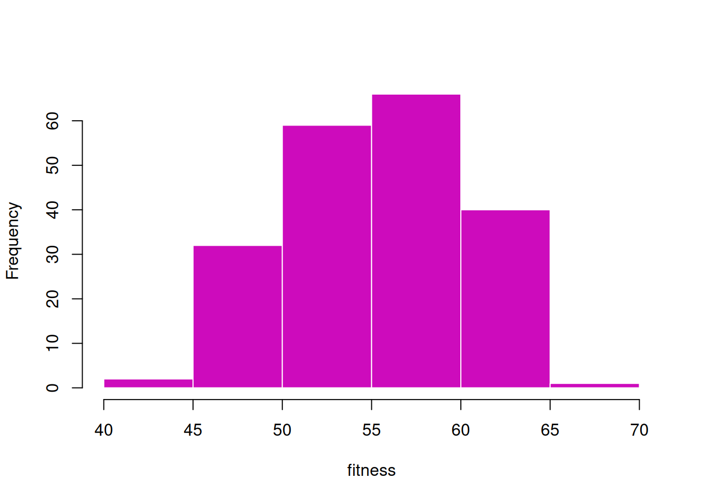
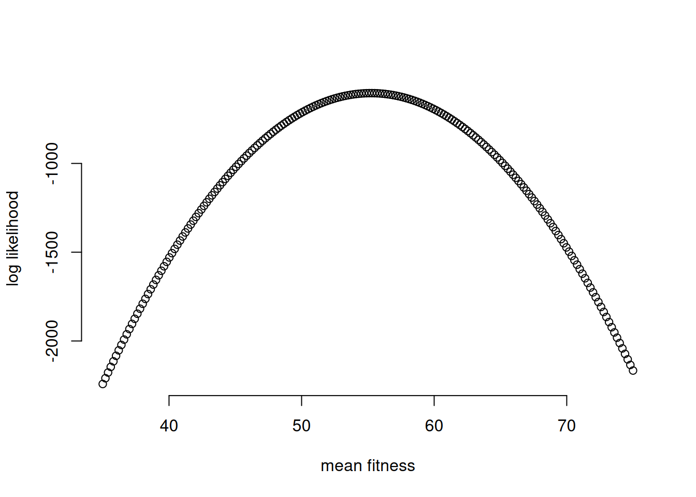
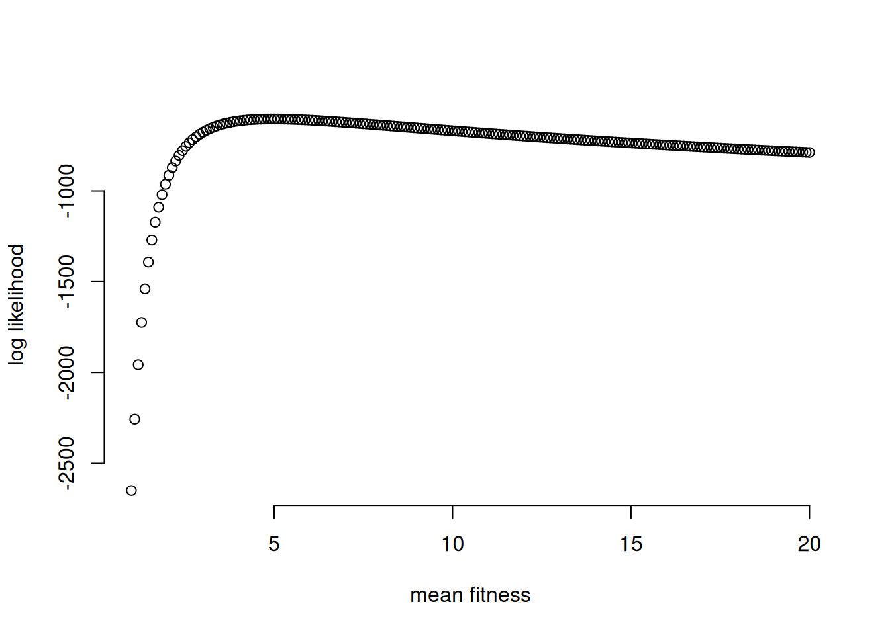
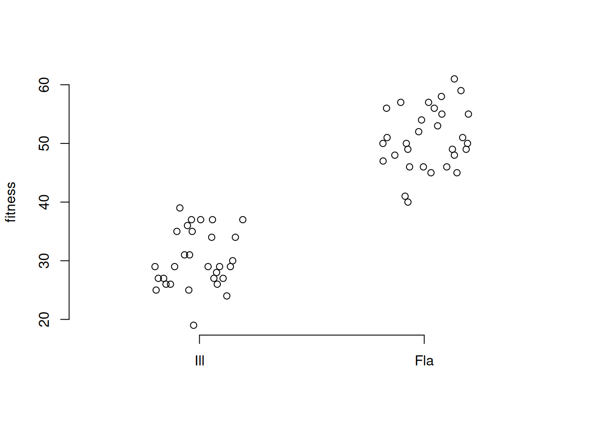
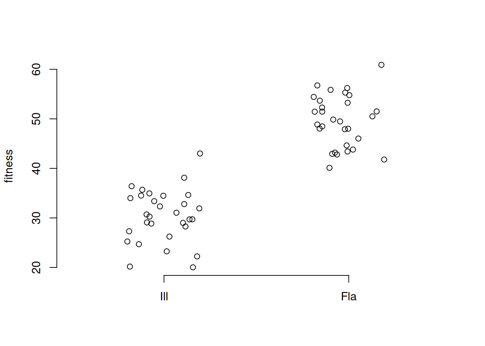
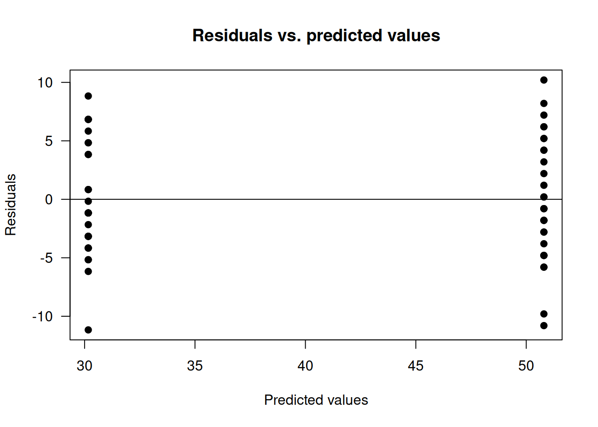

set.seed(20)
myData = rnorm(n=200, mean=55, sd=5)11 Lab 3 – Simple Linear Models
This is a lab to practice simple linear models with means and categories.
We will be simulating data to use in this model.
Pretend that you’re interested in studying selection on Partridge Peas (Chamaecrista fasciculata). You estimate fitness (fruit count) for 200 genotypes in a common garden and want to use a linear model to estimate the mean fitness.
\[ \text{Fitness} \sim \beta_0 + e_i\] \[e_i \sim N(0, \sigma^2)\]
We will start by simulating data under this model using a normal distribution. Use the following parameters: \(\beta_0\) = 55 and \(\sigma\)=5
Make a histogram visualizing your data
hist(myData, col=palette()[6], border="white", main="", xlab = "fitness")
Estimate the mean of the population using a maximum likelihood approach with a grid search. Your grid should go from 35 to 75 and have 200 points. For all calculations, set \(\sigma = 5\).
myGrid <- seq(35, 75, length.out=200)
myLogLikes <- sapply(myGrid,function(m)
{sum(dnorm(myData,mean=m,sd=5,log=TRUE))})
plot(myGrid, myLogLikes, ylab = "log likelihood", xlab = "mean fitness", bty="n")
myMaxLikelihood = myGrid[which(myLogLikes == max(myLogLikes))]
myMaxLikelihood[1] 55.30151Try doing the opposite – keep the mean as 55 and try a grid search of \(\sigma\) with 200 values of sigma.
myGrid <- seq(1, 20, length.out=200)
myLogLikes <- sapply(myGrid,function(m)
{sum(dnorm(myData,mean=55,sd=m,log=TRUE))})
plot(myGrid, myLogLikes, ylab = "log likelihood", xlab = "mean fitness", bty="n")
myGrid[which(myLogLikes == max(myLogLikes))][1] 5.01005Now use lm() to fit the model
model1 <- lm(myData~1)
model1
Call:
lm(formula = myData ~ 1)
Coefficients:
(Intercept)
55.24 sigma(model1)[1] 4.972983Now let’s simulate new data for two categories of plants, with 30 plants each. We will have a population of C. fasciculata from Florida and a population of C. fasciculata from Illinois.
The code below does the simulation
n.1 <- 30
n.2 <- 30
mean.1 <- 30
mean.2 <- 50
sd.1 <- 5
set.seed(5)
#sample fitnesses based on parameters above (the round function gives us integers)
cFlorida <- round(
rnorm(n=n.1, mean=mean.1, sd=sd.1))
cIllinois <- round(
rnorm(n=n.2, mean=mean.2, sd=sd.1))
## but data together in a dataframe
cData <- data.frame(fitness = c(cFlorida, cIllinois),
pop=c(rep('Fla', n.1), rep('Ill', n.2)))
#look at it
plot(jitter(rep(c(0, 1), c(n.1, n.2))), cData$fitness, bty="n", xlim=c(-.5,1.5),
xlab = "", ylab = "fitness", xaxt="n")
axis(1, at=c(1,0), lab = c('Fla','Ill'))
The above is an approach called “mean parameterization”.
We can also simulate with “effects parameterization”
n <- n.1+n.2 # Total sample size
beta.0 <- mean.1 # Mean for females serves as the intercept
beta.1 <- mean.2 - mean.1 # beta.1 is the difference between categories
x <- rep(c(0, 1), c(n.1, n.2)) # Indicator for population
E.y <- beta.0 + beta.1 * x # Expectation
y.obs <- rnorm(n = n, mean = E.y, sd = sd.1) # Add random variation
plot(jitter(x), y.obs, bty="n", xlim=c(-.5,1.5),
xlab = "", ylab = "fitness", xaxt="n")
axis(1, at=c(1,0), lab = c('Fla','Ill'))
Fit both models using maximum likelihood
out.effects <- lm(cData$fitness ~ cData$pop)
out.means <- lm(cData$fitness ~ cData$pop-1)
summary(out.effects)
Call:
lm(formula = cData$fitness ~ cData$pop)
Residuals:
Min 1Q Median 3Q Max
-11.1667 -3.3250 -0.9833 4.3583 10.2000
Coefficients:
Estimate Std. Error t value Pr(>|t|)
(Intercept) 30.1667 0.9263 32.57 <2e-16 ***
cData$popIll 20.6333 1.3100 15.75 <2e-16 ***
---
Signif. codes: 0 '***' 0.001 '**' 0.01 '*' 0.05 '.' 0.1 ' ' 1
Residual standard error: 5.074 on 58 degrees of freedom
Multiple R-squared: 0.8105, Adjusted R-squared: 0.8072
F-statistic: 248.1 on 1 and 58 DF, p-value: < 2.2e-16summary(out.means)
Call:
lm(formula = cData$fitness ~ cData$pop - 1)
Residuals:
Min 1Q Median 3Q Max
-11.1667 -3.3250 -0.9833 4.3583 10.2000
Coefficients:
Estimate Std. Error t value Pr(>|t|)
cData$popFla 30.1667 0.9263 32.57 <2e-16 ***
cData$popIll 50.8000 0.9263 54.84 <2e-16 ***
---
Signif. codes: 0 '***' 0.001 '**' 0.01 '*' 0.05 '.' 0.1 ' ' 1
Residual standard error: 5.074 on 58 degrees of freedom
Multiple R-squared: 0.9859, Adjusted R-squared: 0.9855
F-statistic: 2034 on 2 and 58 DF, p-value: < 2.2e-16What’s different between these two models?
Try looking at the output of these commands:
model.matrix(out.effects) (Intercept) cData$popIll
1 1 0
2 1 0
3 1 0
4 1 0
5 1 0
6 1 0
7 1 0
8 1 0
9 1 0
10 1 0
11 1 0
12 1 0
13 1 0
14 1 0
15 1 0
16 1 0
17 1 0
18 1 0
19 1 0
20 1 0
21 1 0
22 1 0
23 1 0
24 1 0
25 1 0
26 1 0
27 1 0
28 1 0
29 1 0
30 1 0
31 1 1
32 1 1
33 1 1
34 1 1
35 1 1
36 1 1
37 1 1
38 1 1
39 1 1
40 1 1
41 1 1
42 1 1
43 1 1
44 1 1
45 1 1
46 1 1
47 1 1
48 1 1
49 1 1
50 1 1
51 1 1
52 1 1
53 1 1
54 1 1
55 1 1
56 1 1
57 1 1
58 1 1
59 1 1
60 1 1
attr(,"assign")
[1] 0 1
attr(,"contrasts")
attr(,"contrasts")$`cData$pop`
[1] "contr.treatment"model.matrix(out.means) cData$popFla cData$popIll
1 1 0
2 1 0
3 1 0
4 1 0
5 1 0
6 1 0
7 1 0
8 1 0
9 1 0
10 1 0
11 1 0
12 1 0
13 1 0
14 1 0
15 1 0
16 1 0
17 1 0
18 1 0
19 1 0
20 1 0
21 1 0
22 1 0
23 1 0
24 1 0
25 1 0
26 1 0
27 1 0
28 1 0
29 1 0
30 1 0
31 0 1
32 0 1
33 0 1
34 0 1
35 0 1
36 0 1
37 0 1
38 0 1
39 0 1
40 0 1
41 0 1
42 0 1
43 0 1
44 0 1
45 0 1
46 0 1
47 0 1
48 0 1
49 0 1
50 0 1
51 0 1
52 0 1
53 0 1
54 0 1
55 0 1
56 0 1
57 0 1
58 0 1
59 0 1
60 0 1
attr(,"assign")
[1] 1 1
attr(,"contrasts")
attr(,"contrasts")$`cData$pop`
[1] "contr.treatment"out.effects$coefficients (Intercept) cData$popIll
30.16667 20.63333 out.means$coefficientscData$popFla cData$popIll
30.16667 50.80000 Which formulation makes the most sense to you?
12 Residual Diagnostics
# Extract residuals.
res.vals <- out.effects$residuals
# Extract the fitted values.
pred.vals <- out.effects$fitted.values
# Is there a pattern in the residuals?
plot(pred.vals, res.vals, main = "Residuals vs. predicted values",
las = 1, xlab = "Predicted values", ylab = "Residuals",
pch = 19)
abline(h = 0)
# What are we looking for here?# Alternative approach ----------------------------------------------------
# Another way to do this analysis is with the function t.test
t.test(cData$fitness ~ cData$pop, var.equal = TRUE)
Two Sample t-test
data: cData$fitness by cData$pop
t = -15.751, df = 58, p-value < 2.2e-16
alternative hypothesis: true difference in means between group Fla and group Ill is not equal to 0
95 percent confidence interval:
-23.25555 -18.01112
sample estimates:
mean in group Fla mean in group Ill
30.16667 50.80000 # What is the default parameterization for t.test?